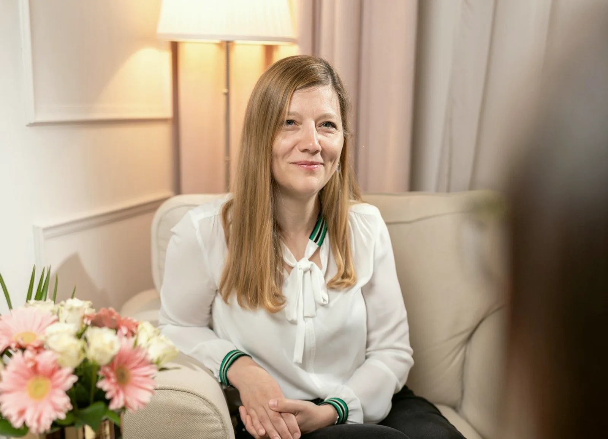

Pár- és családterápia
Ugyanaz a vita, harmadszor is. Ide párként vagy családként jönnek, és nem azt keressük, kinek van igaza.
A terapeuta mindkettejüké. A beszélgetés a közös térről szól, nem arról, ki hibázott.

Párként
Amikor a kettejük dolga már nem megy kettesben
Ugyanaz a vita más szavakkal. Eltávolodás, féltékenység, egy megtört bizalom, vagy egy döntés, ami elé együtt kell állni: gyerek, költözés, válás. A párterápiában mindketten jelen vannak, és a terapeuta a kapcsolattal dolgozik, nem valamelyikükkel.
Egy alkalom 50 perc. A díj a szakember díjsávja szerint alakul, ezt a profilja mutatja.
23 szakemberünk dolgozik párkapcsolati témával, közülük a párterápiát vállalók a szűrt regiszterben.
PárterapeutáinkCsaládként
Nem értjük egymást otthon
A kamaszunk bezárkózott. A szülők és a nagyszülők másképp nevelnek. Egy betegség, egy válás vagy egy költözés átrendezte a szerepeket, és azóta senki nem találja a helyét. A családterápián azok ülnek le, akiket a helyzet érint: néha mindenki, néha csak ketten-hárman. A terapeuta a családdal dolgozik, nem a kijelölt hibással.
Gyereket tizenkét év felett fogadunk. Ha a gyerek fiatalabb, kérdezze az ügyfélszolgálatot, milyen keret lehetséges.
21 szakemberünk dolgozik család és gyereknevelés témával.
CsaládterapeutáinkA kérdés nem az, ki rontotta el, hanem az, hogyan lehet újra egy asztalnál ülni.
Kamasz, aki bezárkózott
Válás, mozaikcsalád, új társ a házban
Betegség vagy veszteség a családban
Több generáció egy háztartásban
Kinek való, és kinek nem most
Nem minden helyzetre a pár- vagy családterápia a megfelelő keret. Ha nem az, megmondjuk, és megmondjuk azt is, mi lehet helyette.
Való
Ha mindketten jönnek
Akkor is, ha egyikük kételkedik benne. A kételyt a szobában lehet kimondani.
Ha a vita már nem a témáról szól
Hanem arról, ki kinek mit mondott, és ki kezdte. Ilyenkor a mintát nézzük, nem az esetet.
Ha egy döntés elé együtt kell állni
Gyerek, költözés, karrier, betegség a családban, egy szülő gondozása.
Ha a család egy változás után nem találja az új rendet
Válás, új társ, kamaszkor, kirepülés, gyász.
Nem, vagy nem most
Ha a kapcsolatban bántalmazás van
A párterápia ilyenkor nem a megfelelő keret. Egyéni segítséget javaslunk, és megmondjuk, hova fordulhat.
Ha egyikük már döntött, de még nem mondta ki
A párterápia ritkán a bejelentés helye. Az egyéni terápia ilyenkor többet segít, mindkettejüknek.
Ha akut pszichiátriai krízis vagy aktív függőség van
Először annak a kezelése. A pár- vagy családterápia ehhez kapcsolódik, a szakember javaslata szerint.
Gyakori kérdések
Amit előre kérdeznek
Ami itt nincs, azt az ügyfélszolgálat válaszolja meg hétköznap 9 és 15 óra között.
Mindkettőnknek el kell jönnünk az első alkalomra?
A párterápia párban kezdődik. Ha a társa most nem jön, Ön jöhet egyedül, egyéni keretben, és a szakemberrel átbeszélik, mi lehet a következő lépés.
Mennyi ideig tart egy pár- vagy családterápia?
Egy alkalom 50 perc. A folyamat hosszát az első alkalmak után a szakemberrel közösen döntik el. Előre nem mondunk számot.
Mennyibe kerül?
A pár- és családterápia díja a szakember díjsávja szerint alakul, ezt a profilja mutatja. Egészségpénztári elszámolásról az ügyfélszolgálat tájékoztat. Árak és fizetés
Hozhatjuk a gyerekeket?
Családterápiára tizenkét év feletti gyerekek jönnek. Hogy egy adott alkalmon ki legyen jelen, a szakember mondja meg az első beszélgetés után.
Online is lehet?
Több kollégánk vállal online alkalmat, ez a profiljukon látszik. Pár- és családterápiánál a szakember dönti el, hogy az adott helyzetben vállalja-e.
Két út, egy ház
Melyikkel jönnek?
A regiszter párként és családként külön szűrhető. Mindkét listában olyan kollégák vannak, akik ezt a formát vállalják.
Ha nem tudják, melyik: az ügyfélszolgálat hétköznap 9 és 15 óra között, +36 30 961 1364.